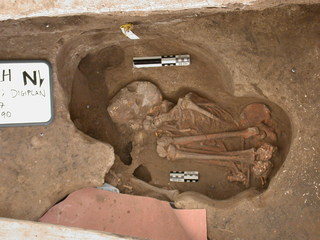
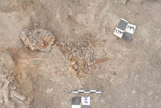
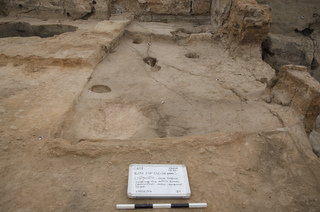
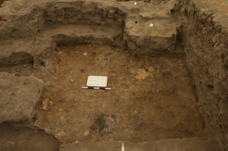
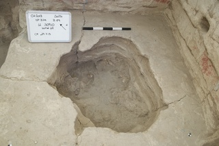
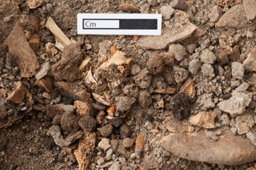
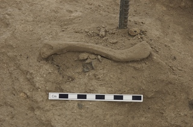

Chapter 2 OCR images with extracted text
| filename | value | img |
|---|---|---|
| 20060718_ly_001.jpg | WEST-FAING SECTION THROUGH [1314 ] SHOWING UNITS (12930, 13103, 13140, |

|
| 20100807_14-29-41.jpg | Cm |

|
| 20030810_scan_jpq_171.jpg | RPER | |
| 20170627_north_6938.jpg | NORTH |

|
| 20130812_pfb_035.jpg | CH2013 lOS WS U. (850, 15323, 16843 | |
| 20110802_north_009.jpg | ÇHII 40 40 F3615 SK 19 Sol Ru 11512. S. 336 Ltot 02 / 08 / 11 | |
| 20090917_jpq_016.jpg | Cm | |
| 20110822_jpq_101.jpg | Cm | |
| 20070725_221921.jpg | CHO구 4040 B57 S 216. F2392 ƠFaV SUPERSTRUCTURE s26/0/07 0tlo | |
| 20120808_south_4940.jpg | CH2012 D: 20379 B:97 Sp :365 Midden Loyer at the SE coner of SOUTH 8.97 NA 08lo/2 | |
| 20170710_tpc_3655.jpg | TPC u32337 ovemi base |

|
| 20080729_sep_004.jpg | su 6453 |

|
| 20090926_143108.jpg | Cm |

|
| 20170612_south_8466.jpg | CHIT SOuTH 32693 .1 F 8189 Sp 620 OY-NA 1201仔 |

|
| 20160510_south_4418.jpg | Sou CH U22350 Sp. S65 WALS CB 10l Gsl20l4 |

|
| IMG_4708.JPG | 4040 CHO8 unit: 16422 find/sample: material: AU1M사 initials/date 22/07/08 cm |

|
| 20080914_jpq_019.jpg | Cm |

|
| ch96t0001_03.jpg | CH96 Summit F.100 lat +F.123 F117 F.118 |

|
| 20130709_cons_0296.jpg | CH2012 TPC unit 201SS nd/saniple find/sample material 3 initials/date BEFORE TREATMENT M26 01.08.07 10 cm |

|
| 20120724_south_4589.jpg |
|
|
| 20050712_jpq_176.jpg | ot 9 |

|
| 20130629_north_5133.jpg | 6 102 Sp Start of |

|
| 20120731_south_4816.jpg | CH12 South 7002 A.c. 3),01.202 | |
| 20070821_jpq_337.jpg | DURMA | |
| 20160606_south_0631.jpg | CHI6 B.60 Sp135 nstala ton in F 3433 .wall South 66.16 |

|
| 20130818_pfb_021.jpg | ÇH 2013 B. 100 31199 ’儿932 PTW 18.08 203 |

|
| 20140722_south_2771.jpg | CH II SOUTH 8.130,SP. 529,F:356 OVEN KJ 22.07. |

|
| 20140730_south_2920.jpg | Hzoiu U 21722M 30.07.14 N. SUNKEN FLOOR | |
| 20080810_sl_116.jpg | MUD |

|
| 20070730_jpq_066.jpg | IT | |
| 20070822_jpq_051.jpg | 5 cm |

|
| 20060802_sel_002.jpg | 02.08 2006 |

|
| 20100812_10-09-48.jpg | Cm |

|
| 20140802_cons_0016.JPG | AFTER TREATMENT ÇH2 O13 unit: 30 50 rnd/sample X.6 material: initials/date: 23 02 20 CT |

|
| 20030721_4040_jpq_001.jpg | 4040 N u 7603 BUKIAL 20 cm 20 c | |
| 20130626_cons_8331.jpg | 9293 (930 x find Homero initials/date cz. 24.07.05 BEFORE TREATMENT 0乙 |

|
| 20140710_north_7517.jpg | 055 | |
| 20130706_cons_0247.jpg | ÇH2 013 unit: find/sample material: HORN CoRe initials/date: |

|
| 20040728_eth_058.jpg | 100 cm |

|
| 20100826_jpq_028.jpg | Cm | |
| 20120822_pfb_125.jpg | WEST TKENCHS 22 08. 2012 |

|
| 20160620_jpq_6652.jpg | ÇH16 NORTH u 32366 PLASTER 300b IMPRESSIONS SPa 20 616 FLOOR W | |
| 20040718_d70ret_001.JPG | C104 Nb 115 | |
| 20020612_jpq_064.JPG | DENIM | |
| 20020630_jpq_004.JPG | 20 crm DIGPLAN 90 แ1301 |  |
| 20160714_cons_1126.JPG | BEFORE TREATMENT SoLTH CH2O(6 find/sample material initials/date: L peluis 10 Cm |

|
| 20150628_north_0510.jpg | CHIS S.P. 92 8.52 Oven core sinnctute ammed enre | |
| 20090927_114803.jpg | P.173 south сно 8 unit: find/sample material: initials/date: CMB-$1 Cm |

|
| 20090907_jpq_056.jpg | Cm | |
| 20060726_jpq_004.jpg | 20 cm 20 cm 2 | |
| 20060807_eny_004.jpg | CH/O6, WEST MDUND F 2454 U 13840 |

|
| 20170610_jpq_4569.jpg | FA 0 |  |
| 20060917_jpq_014.jpg | Cm |

|
| DSCN1893.JPG | Cm |

|
| 20080721_071331.jpg | CHO8 Soath Fire sedt Au MIS 21/07or |

|
| 20050803_jpq_020.jpg | 100 cm |

|
| 20070710_jpq_002.jpg | 20 cm |

|
| 20080909_AL_012.jpg | FOR OOR | |
| 20050809_jpq_027.jpg | CHOS S26 OVEN WITH INCISED PLASTER F 2.110 JP 09 08 0s |

|
| 20040819_jpq_022.jpg | Cm | |
| 20130714_cons_0396.jpg | 10 Cm unit: lo58 BEFORE TREATMENT |.CH20亿 : 213 unt: 16 986 find/sample material find/sample : DLo initials/date material: initials/date: G-8.に 221?/12 eTX |

|
| 20170509_north_4548.jpg | SE PAE covering the ice sunce C extronce area Coamel Lotee |  |
| 20170517_jpq_0309.jpg | cm |

|
| 20140703_north_6920.jpg |
|

|
| 20030712_4040_jpq_016.jpg | 20 cm 20 cm |

|
| 20100728_15-04-51.jpg | South B.Bo SP3 29 16 MINDE LAER 28.61 lo |

|
| 20030716_bach_jpq_018.jpg | 50 cm | |
| 20140702_tpc_1829.jpg | СН 14 F 7352 Infill v.3034 2-00-2014 |

|
| 20080712_mib_001.jpg | 165221 F. 2640 Spore 329 nce 12/o구/08 |

|
| 20130717_north_5951.jpg | NORTH | |
| 20100811_17-19-44.jpg | 4S34 X Cm | |
| 20090926_150841.jpg | Cm |

|
| 20020625_jpq_003.JPG | BACH N $7 2002-on 1 $467 |

|
| 20150704_north_0769.jpg | CHIS Nst B S2 R92 5.2O12 astes on al CH |

|
| 20060810_eny_004.jpg | HO6 WEST MOUND U13890 N↑ Floar: | |
| 20070723_IF_037.jpg | 1 0 cm | |
| 20090818_pfb_012.jpg | 1834 |  |
| 20110806_south_050.jpg | CH 20H OTH Sp. 457 F.[4096] BRICKS OF THE UJALL | |
| 20040720_vs_098.jpg | 81 82 483 89- 498 499 |

|
| 20090927_085301.jpg | 24561S.I0 | |
| 20020622_jpq_055.JPG | 20 cm | |
| 20090718_174007.jpg | Tm 13159. H | |
| 20060723_tu_005.jpg | IST CH06 UNIT 12(87 StacE 294 TU 2307.04 |

|
| 20170805_eu_9951.jpg | CH2D3 unit: 3<071 find/sample: material: 6丶 initials/date: PF 18//13 Cm | |
| 20020620_jpq_012.JPG | O cm 20 cm BACH N F 63,636 | |
| 20040726_ma_013.jpg | Catal Hoyuk 2004 |

|
| DSCN1088.JPG | 27 | |
| 20160702_north_6236.jpg | ANP Sk 300to/30o 45 8.131 S. 500 E.S 02.07.16 |

|
| 20110807_jpq_161.jpg | Cm | |
| 2003_4040_8803x16_ser_001.jpg | m@了 。4の4 СН unit: x find: 80 materia:Bed initials/date: | |
| 20070731_135516.jpg | 4040 FTO F. 3012 sk.16loo L1041] 2%. | |
| 20170708_tpc_3553.jpg |
|
|
| 20170511_south_6787.jpg | CH201? h .212 30 U-212 20 msted edge 7401 8. 80 . SP、135 Plat forms | |
| 20140722_cons_0001a.JPG | unit: find/sample: material initials/date 20 0乙 cm BEFORE TREATMENT |

|
| 20060720_rr_001.jpg | CHoG 1338 2 |

|
| 20130729_south_1155.jpg | CH 2013 burial Hill cri 29-713 |  |
| 20160723_jpq_0481.jpg | Cm | |
| 20160613_north_5516.jpg | CH I NOR.TH | |
| 20130723_south_0897.jpg | CH/3 SOUTH 70/0 Two crania | |
| 20060716_smc_001.jpg | CH06 SOUTH 853 /spmce 272 F. 1530 5. (12 506) BABY SkELE |

|
| 20040725_eth_159.jpg | 100 cm |

|
| 20150718_north_1231.jpg | NORTH u-22162 |

|
| 20120821_pfb_060.jpg | WEST TRENCH 5 B 105 18372,18370 Z1 08 PTW |

|
| 20030727_BACH_MAL_010.jpg | BACH 2003 U8685 | |
| 20160523_north_4759.jpg | CHK u.30O6S PLASTER SuRFACE F. 957 ExTENDING ON TO 8.131 SP 600 WALL F.7O5 DF 23.5.16 |

|
| 20040720_vs_028.jpg | Cm | |
| 20150726_north_4848.jpg | Cm |  |
| 20140722_cons_0007 1.JPG | 4078 5.4 Plasta BEFORE TREATMEN |

|
| 20040718_eal_047.JPG | Cm |

|
| 100_0647.JPG | TP unit 15803 x find: material initials/date PF 20 Cm | |
| 20170805_eu_9918.jpg | CHO unit x find: WotIce material initials/date: AJピ 100イ. | |
| 20150819_tpc_7900.jpg | B52 |

|
| 20030710_4040_jpq_010.jpg | 20 |

|
| 20040729_ma_080.jpg | 0 cm 2 |

|
| 20050824_jpq_041.jpg | 5 Numarali Bina’nin Kazisi Excavhing Binlding |

|
| 20070815_jpq_141.jpg | Cm |

|
| 102_2965.JPG | unit: find/sample material: initials/date | |
| 20150815_mjp_0029.jpg | Cm |

|
| 20170604_north_1814.jpg | CHIT7 NORTH |

|
| 20100822_lkh__065.jpg | GH aolo Nest-Tech sp 34 5053 5054 FP | |
| 20170806_eu_0148.jpg | Cm |

|
| 20130727_north_6252.jpg | CHI3 U. So1o4 B.li9 Sp. 513 Κ.Ε. 27107113 NORTH Dast retrieya |

|
| 20070723_IF_023.jpg | 1 0 cm |

|
| 20030716_bach_jpq_010.jpg | WAL | |
| 20080817_AL_008.jpg | ial |

|
| 20020630_jpq_025.JPG | 50 | |
| 20070719_jpq_048.jpg | MEAS ON |

|
| 20150721_tpc_3021.jpg | 20 70 U. 2 16 21 07 |

|
| 20070702_jpq_021.jpg | 939 959 40 | |
| 20040718_jpq_001.jpg | CHO4 4 640 | |
| 20090926_141356.jpg | Su n S453 unit: find/sample: material: initials/date: 又 CO-51 Cm |

|
| 20090903_110330.jpg | CHo9 SouTH Clou Superstucture 2 Sp 137 | |
| 20040718_d70jpq_036.jpg | Cm | |
| DSCN1492.JPG | CH99 2841.x1 |

|
| 20080810_sl_263.jpg | 10 cm | |
| 20160630_south_3737.jpg | CH 16 Seith N B. 12 - SP. 10 U21821-Fi " ou F.8019 - bura iy 30/06 /16 | |
| 20040803_jpq_176.jpg | Cm | |
| 20030824_nort_jpq_136.jpg | 5 | |
| 20090927_082808.jpg | Cm |

|
| 20080713_lh_001.jpg | CH0% 1010 |

|
| IMG_3183.JPG | CHO7 WEST TS しWall plaster- NCHUL2007 S310 | |
| 20170522_north_5175.jpg | CHIT 4산 221 1は |

|
| 20110725_pfb_013.jpg | 丨 4112에 U15194 $34s 25.0% 11- |

|
| 20020625_jpq_082.JPG | 20 cm 20 Cm |

|
| 20070711_134323.jpg | F2099 14581 | |
| 20080907_jpq_177.jpg | Cm 1 |

|
| 20090810_110220.jpg | CHO SouT 1330 R6 10.08.09 |

|
| 20070823_jpq_035.jpg | 10 |

|
| 20090909_074611.jpg | CH09 South 18592 Buccrania X2 |

|
| 20020801_mal_326.JPG | 5665 x33 | |
| 20030810_scan_jpq_072.jpg | cyrax 9 |

|
| P9210718.JPG | Cm | |
| 20090816_pfb_010.jpg | CHO West T5 U Л8333 6.8.2009 PFR |

|
| DSC_0473.JPG | glass Pape Cans | |
| 20140720_tpc_0357.jpg | C:/4 157 |

|
| 20130722_south_0844.jpg | CHI3 South Sp. 235 F.7253 Daily Sketch 22.03. NB | |
| 20150824_north_9766.jpg | 5 |

|
| 20050721_vs_096.jpg | Cm |

|
| 20070709_091746.jpg | CHO7 |

|
| 2003_mellet_jpq_147.jpg | MELLET. 225.3/30 C m | |
| 20150811_tpc_3652.jpg | Sp. 572 |

|
| 20060704_jpq_046.jpg | 43 |

|
| 20160616_jpq_5865.jpg | Columb | |
| 20060716_lc_001.jpg | 56789-10-11 12 13 | |
| 20030731_4040_jpq_004.jpg | 20 cm |

|
| 20170805_eu_9985.jpg | Cm |

|
| CH97_OS2_14.JPG | HALIA TOUR FAX: 065켜,-211765 ogentura Fox |

|
| 20060801_eny_002.jpg | 06 yjES7 MOUND F 2403 11746 | |
| 20150809_tpc_3576.jpg | CH2015 u31392 TPC U.31393 U. 31314 u.31395 MD0108 | |
| 2003_mellet_jpq_357.jpg | MELLET.53.1/56 C m |

|
| 20080802_jpq_083.jpg | 06てP unit 30 22 x find: South of HoHo unit: 丿0165 x find: material: SHE initials/date weria: Shell unit: x find: material: initials/date: Arrca noae PE 5.7 initials/date lu |

|
| 20090907_105153.jpg | CH 09 oumy 1857 334 x2 | |
| 20070626_jpq_038.jpg | PC TCRA1103 | |
| 20090718_181743.jpg | c.H 1997 / | |
| DSC_0909.JPG | 44 22 | |
| 20040726_ma_026.jpg | Çatal Höyük 2004 15 10 0cm 1 2 3 4 5 |

|
| IMG_7922.JPG | Cm | |
| CH97-misc 22.JPG | CIN BOW |

|
| 20040726_eal_104.jpg | C HoY A10520 돼< 26-07. 0v | |
| 20030720_4040_jpq_009.jpg | 20 Cm 20 cmm |

|
| Dscn0001vb.jpg | 4657.D1 | |
| 20020708_bb_014.JPG | Box s /92e ? /439? Box 5 i938 BACH, 20o2 |

|
| 20090927_jpq_252.jpg | Cm |

|
| 20070724_jpq_015.jpg | 50 |

|
| 20060622_jpq_001.jpg | u12646 CUT JPG 22 06 06 |

|
| 20140721_south_2711.jpg | CH I4 8 89 SoUTH SP. 379 U 30969 Make -up 21.07.14 M.F |

|
| 20080723_pfb_044.jpg | CHO8 Deep Sounding South Profile PFR 23 70s |

|
| 20170509_north_4560.jpg | (Pher ep THE 23624 4사 |

|
| 20160522_north_4693.jpg | C HI6 IN υ.30osi BASAL FZLL F. 757 OF HEARTH B. 131 SP. 500 DF 22-05-206 | |
| 102_4187.JPG | unit og 72 find/sample: material initials/date: (8(08/09 SB 1 cm |

|
| 20130819_pfb_057.jpg | CH20 B. 96 WTS PTW 19.08 2oi3 | |
| 2003_4040_xxxxxx_ser_001.jpg | 4040 CHO3 unit: x find: material: initials/date: Вен S 24.08 | |
| 20100826_jpq_055.jpg | Cm |

|
| 20030707_4040_jpq_003.jpg | ra uつ。で |

|
| 20040726_ma_062.jpg | Catal Hoyük 2004 0cm 1 234 5 | |
| 20150629_south_3319.jpg | 291/I | |
| smm_sara_063.JPG | CAag op | |
| 20070618_jpq_004.jpg | Cm |  |
| 20050702_jpq_056.jpg | 10 | |
| Catal 96 North, Sheet 15 291.JPG | BASE PLAN BUILDING 1, Space 71 Space 70 0 Space 110 ■ Platform Plant Remains A Animal Bone ■ Human Bone » Obsidian ◆ Pottery +Other ARTIFACT DISTRIBUTION PLAN PHASE I |

|